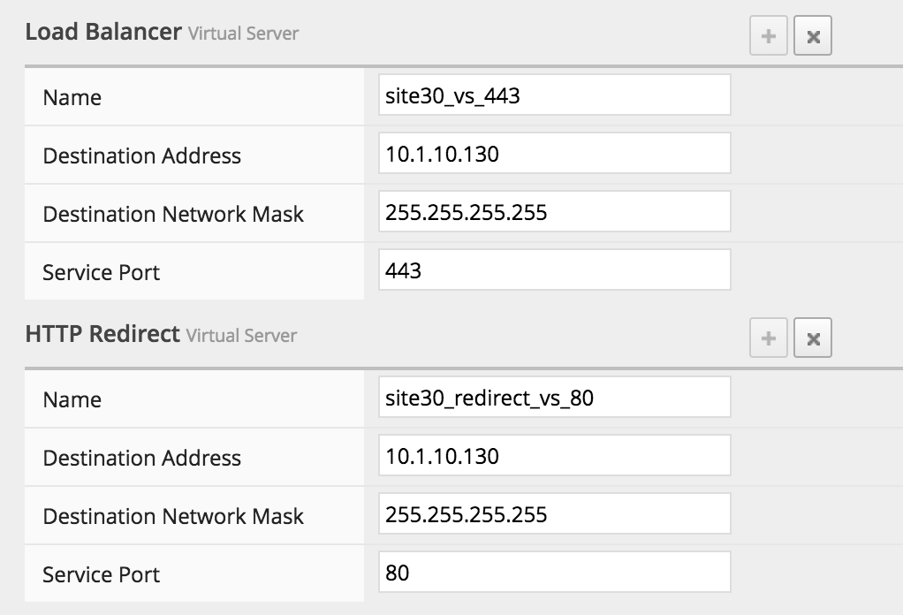
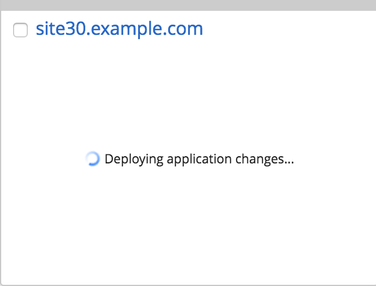
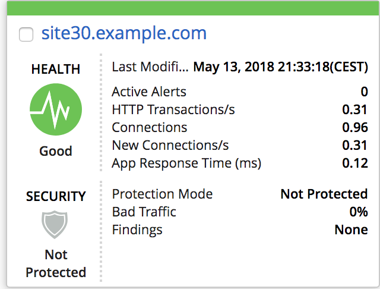
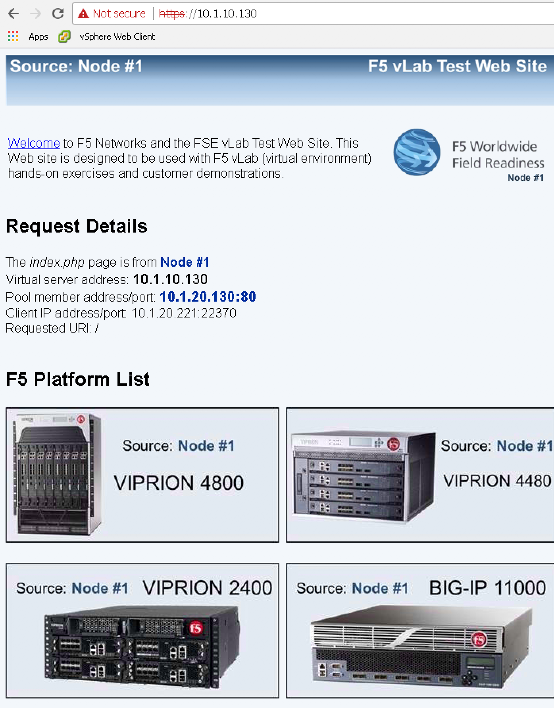

F5 BIG-IQ & Cloud Edition Lab > Class 2: BIG-IQ Deployment with auto-scale on AWS, Azure & VMware (Cloud Edition) > Module 2: Deploy an application on a SSG (VMWare) Source | Edit on
Lab 2.1: Deploy an application¶
We will deploy an application via the app template feature on our SSG called
SSGClass2
On your BIG-IQ, go to Applications > Applications

Click on the Create button. Select the Template Default-f5-HTTPS-offload-lb-template
Note
A SSG will only support applications with a HTTP profile attached to it. If you try without assigning a HTTP Profile, it will return an explicit error message
Name : site30.example.com
Environment: Select Service Scaling Group
Service Scaling Group: Select SSGClass2

Servers : Click on the advanced view

Note
You’ll need to setup the Application Server Nodes first to be able to select them as your pool members. So create the nodes as shown in the screenshot below and then setup the pool member. To setup the pool member, it may be easier to click on the drop down list and type the beginning of the node name (ie 10.1.20.130 or 10.1.20.131)
{kind=link}
Application Server Pool:
Name: pool_site30
Pool members:
Port: 80
node: Select # 10.1.20.130
Port: 80
node: Select # 10.1.20.131
Application Server Node
Name: 10.1.20.130
Address: 10.1.20.130
Name: 10.1.20.131
Address: 10.1.20.131
Load Balancer:
Name: site30_vs_443
Destination Address: 10.1.10.130
Destination Network Mask: 255.255.255.255
Service Port: 443
HTTP Redirect:
Name: site30_redirect_vs80
Destination Address: 10.1.10.130
Destination Network Mask: 255.255.255.255
Service Port: 80

{kind=link}
Click on Create. You’ll see your application being created

On the page Applications > Applications, you’ll see this while the app is getting deployed (Tile view):
{kind=link}
As soon as the app is configured, you’ll see this:
{kind=link}
You can access your app from the RDP session. You should see this:
{kind=link}
Next, we will review the configuration on our SSG devices and on our
Service Scaler devices